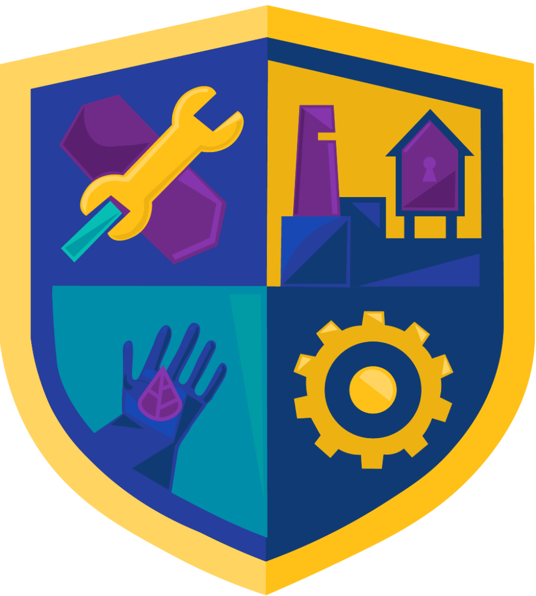

SAFETY ZONE
Desenvolvido por Safe Tech e composto de 5 minijogos, engloba situações divesas que conectam o ambiente de trabalho com segurança do trabalhador, instigando o jogador a compreender o uso correto de equipamentos de segurança, a identificar situações de risco e a lidar com acidentes e zonas de risco. Dessa maneira, pode ser aplicado em empresas para amenizar acidentes, e consequentemente, despesas e indenizações, como também para motivar equipes a cuidar do próximo de maneira mais humanizada.